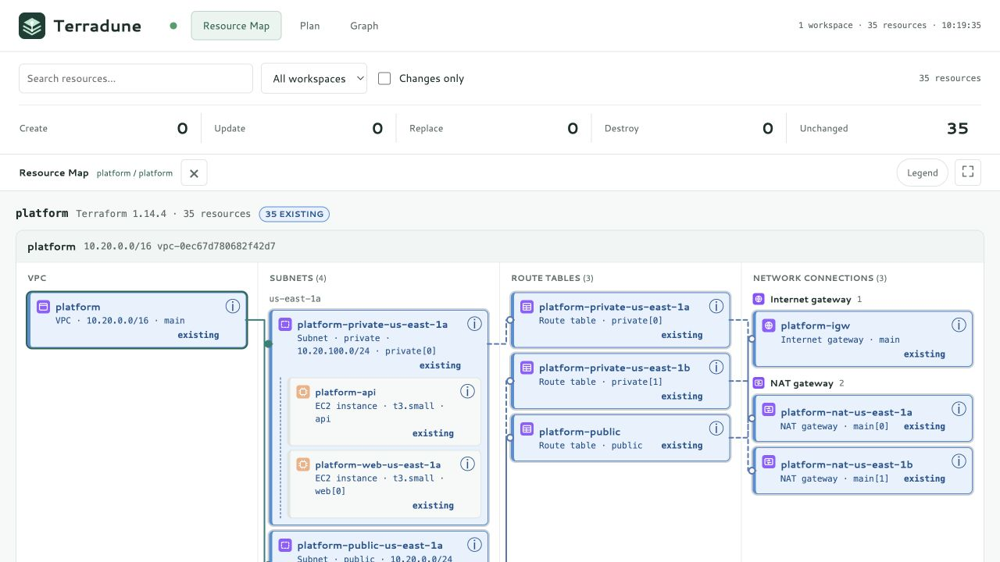
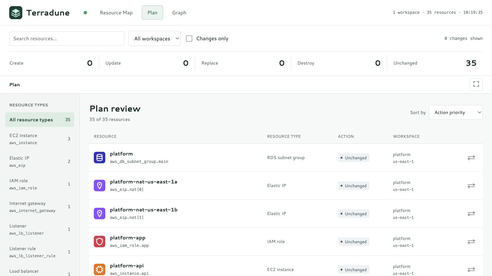

Resource Map
VPCs, subnets, routes, gateways, and load balancers, organized by infrastructure role. Pin a path and expand the canvas.
LOCAL INFRASTRUCTURE REVIEW
See what Terraform will create, change, and connect.

FROM PLAN TO UNDERSTANDING
AWS infrastructure is easier to review when the changes and their relationships are visible together. Move from the map to every resource, then follow its dependencies.
VPCs, subnets, routes, gateways, and load balancers, organized by infrastructure role. Pin a path and expand the canvas.
One entry per resource and workspace. Review destructive changes first, search addresses, and filter by resource type or action.
Inspect direct dependencies or the full graph. Follow routed arrows and open configuration without losing context.

A TOOL FOR YOUR WORKSPACE
Terradune runs beside your Terraform configuration. There is no hosted Terradune account and no plan-upload service.
Terraform still contacts configured providers, backends, and data sources. Terradune never runs terraform apply.
START WITH YOUR NEXT PLAN
Bring an initialized workspace and the credentials Terraform already needs.